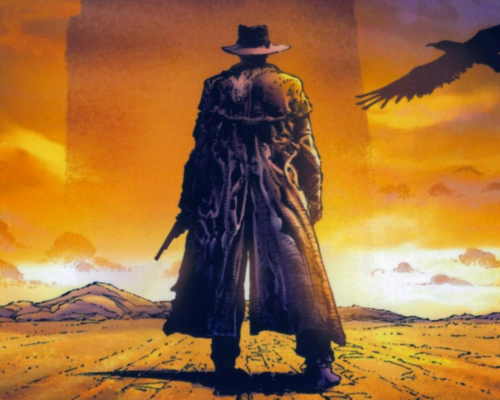
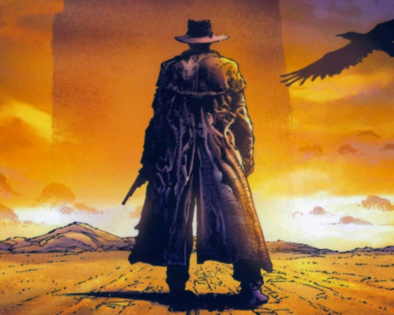

lattice.js
A jQuery plugin that creates a responsive 2-dimensional slider for both HTML elements and images.
Not another slider plugin!


 

Sure, it's pretty much just another slider but it's got some interesting features!
- Navigate slides in two dimensions.
- Generates a map of thumbnails representing each slide to navigate.
- Specify thumbnail images for each slide. Thumbnails can be resized.
- Restrict paths that can be followed.
- The slider and the slides themselves are responsive
- Use crop settings to crop to one of 9 areas of a slide as the slider decreases in width/height
- Can dynamically generate thumbnails via a canvas screenshot of a slide. Thanks @niklasvh for the html2canvas project!